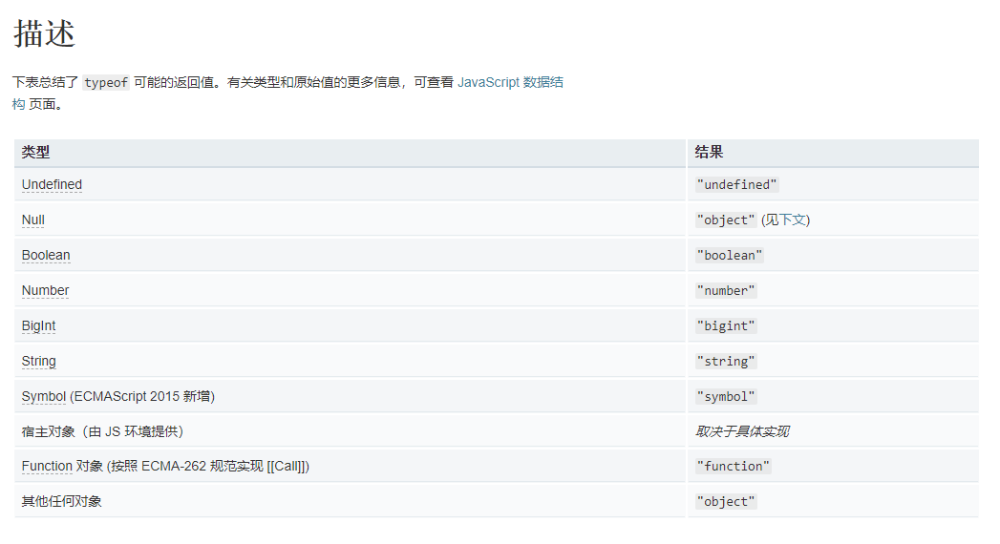
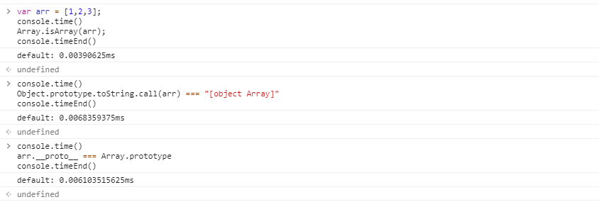

1.typeof操作符

示例：
// 数值
typeof 37 === 'number';
// 字符串
typeof '' === 'string';
// 布尔值
typeof true === 'boolean';
// Symbols
typeof Symbol() === 'symbol';
// Undefined
typeof undefined === 'undefined';
// 对象
typeof {a: 1} === 'object';
typeof [1, 2, 4] === 'object';
// 下面的例子令人迷惑，非常危险，没有用处。避免使用它们。
typeof new Boolean(true) === 'object';
typeof new Number(1) === 'object';
typeof new String('abc') === 'object';
// 函数
typeof function() {} === 'function';
从上面的实例我们可以看出，利用typeof除了array和null判断为object外，其他的都可以正常判断。
2.instanceof操作符 和 对象的constructor 属性
这个操作符和JavaScript中面向对象有点关系，了解这个就先得了解JavaScript中的面向对象。因为这个操作符是检测对象的原型链是否指向构造函数的prototype对象的。
var arr = [1,2,3,1];
console.log(arr instanceof Array); // true
var fun = function(){};
console.log(fun instanceof Function); // true
var arr = [1,2,3,1];
console.log(arr.constructor === Array); // true
var fun = function(){};
console.log(arr.constructor === Function); // true
第2种和第3种方法貌似无懈可击,但是实际上还是有些漏洞的，当你在多个frame中来回穿梭的时候，这两种方法就亚历山大了。由于每个iframe都有一套自己的执行环境，跨frame实例化的对象彼此是不共享原型链的，因此导致上述检测代码失效
var iframe = document.createElement('iframe'); //创建iframe
document.body.appendChild(iframe); //添加到body中
xArray = window.frames[window.frames.length-1].Array;
var arr = new xArray(1,2,3); // 声明数组[1,2,3]
alert(arr instanceof Array); // false
alert(arr.constructor === Array); // false
4.使用 Object.prototype.toString 来判断是否是数组
Object.prototype.toString.call( [] ) === '[object Array]' // true
Object.prototype.toString.call( function(){} ) === '[object Function]' // true
这里使用call来使 toString 中 this 指向 obj。进而完成判断
5.使用 原型链 来完成判断
[].__proto__ === Array.prototype // true
var fun = function(){}
fun.__proto__ === Function.prototype // true
6.Array.isArray()
Array.isArray([]) // true
ECMAScript5将Array.isArray()正式引入JavaScript，目的就是准确地检测一个值是否为数组。IE9+、 Firefox 4+、Safari 5+、Opera 10.5+和Chrome都实现了这个方法。但是在IE8之前的版本是不支持的。
总结：
综上所述，我们可以综合上面的几种方法，有一个当前的判断数组的最佳写法：
var arr = [1,2,3];
var arr2 = [{ name : 'jack', age : 22 }];
function isArrayFn(value){
// 首先判断浏览器是否支持Array.isArray这个方法
if (typeof Array.isArray === "function") {
return Array.isArray(value);
}else{
return Object.prototype.toString.call(value) === "[object Array]";
// return obj.__proto__ === Array.prototype;
}
}
console.log(isArrayFn(arr)); // true
console.log(isArrayFn(arr2)); // true
上述代码中，为何我们不直接使用原型链的方式判断（兼容性好），而是先判断浏览器支不支持Array.isArray()这个方法，如果不支持才使用原型链的方式呢？我们可以从代码执行效率上看：

从这张图片我们可以看到，Array.isArray()这个方法的执行速度比原型链的方式快了近一倍。